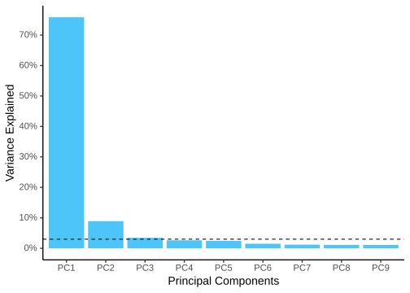
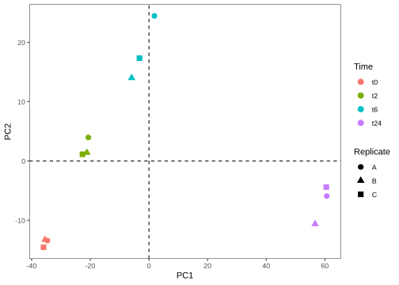
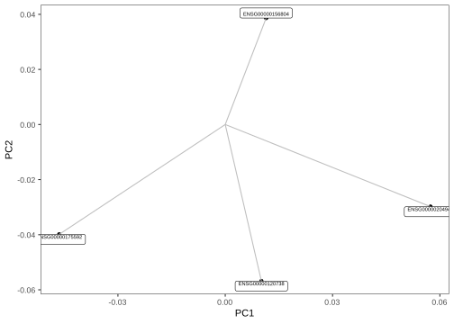
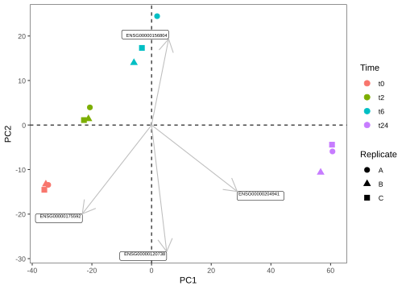
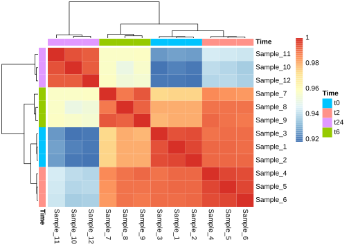
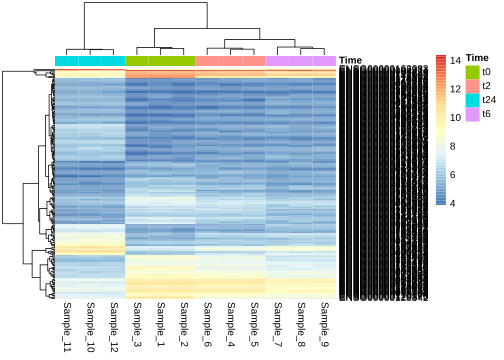
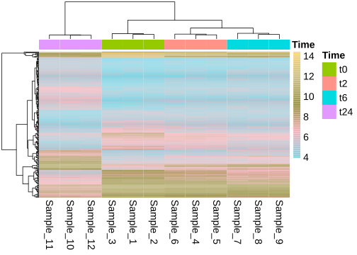
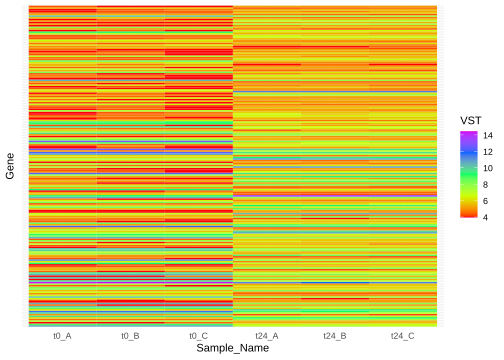
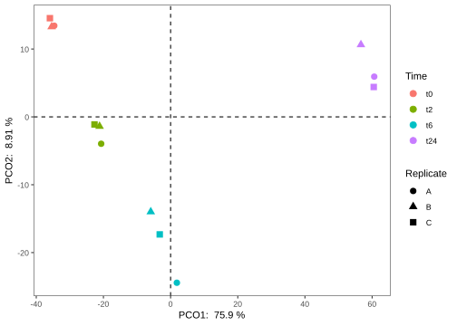

Let us first make a PCA object. For this, we will use the VST data, because it makes sense to use the normalized data for building the PCA. To run PCA, we use the R function prcomp(). It takes in a matrix where samples are rows and variables are columns. Therefore, we transpose our count matrix using the function t(). If we do not transpose, then PCA is run on the genes rather than the samples.
gc_vst <- read.table("data/counts_vst.txt", header = T, row.names = 1, sep = "\t")
vst_pca <- prcomp(t(gc_vst))After you computer the PCA, if you type the object vst_pca$ and press TAB, you will notice that this R object has multiple vecors and data.frames within it. Some of the important ones are
sdev: the standard deviations of the principal componentsx: the coordinates of the samples (observations) on the principal components.rotation: the matrix of variable loadings (columns are eigenvectors). Note There are quite a few functions in R from different packages that can run PCA. So, one should look into the structure of the PCA object and import it into ggplot accordingly!
First, let us look into plotting the variance explained by the top PCs.
frac_var <- function(x) x^2/sum(x^2)
library(scales)
vst_pca$sdev %>%
as_tibble() %>%
frac_var() %>%
mutate(Comp = colnames(vst_pca$x)) %>%
slice(1:9) %>%
ggplot(aes(x=Comp, y = value)) +
geom_bar(stat = "identity", fill = "#4DC5F9") +
geom_hline(yintercept = 0.03, linetype=2) +
xlab("Principal Components") +
scale_y_continuous(name = "Variance Explained", breaks = seq(0,0.8,0.1), labels = percent_format(accuracy = 5L)) +
theme_classic(base_size = 14)plot

So, looks like the first two components explain almost 85% of the data. Now, let us look into building a plot out of these components. From the above object, to get the scatter plot for the samples, we need to look into vst_pca$x. Then, we combine this data (as shown below) with the metadata to use different aesthetics and colors on the plot.
vst_pca$xoutput
## PC1 PC2 PC3 PC4 PC5 PC6
## Sample_1 -34.641623 -13.435531 6.486032 -0.2742477 -6.406502 5.6703279
## Sample_2 -35.431333 -13.277983 5.171377 -0.3540945 -3.953216 6.9974341
## Sample_3 -35.938795 -14.544994 2.885351 -11.3414829 5.950082 -10.8497916
## Sample_4 -20.672358 3.962013 -1.414301 10.4819194 -0.195882 -2.8003847
## Sample_5 -21.155503 1.390981 -6.644132 7.4002617 6.505502 0.9771040
## Sample_6 -22.662075 1.115504 -9.801356 6.3107519 7.431833 0.6592987
## Sample_7 1.862762 24.449057 12.865650 -4.4029501 5.822040 4.1873901
## Sample_8 -5.909698 13.992629 -14.775686 -10.9789567 -8.967097 2.2612207
## Sample_9 -3.233544 17.321871 5.196746 2.5142966 -6.983077 -7.2580550
## Sample_10 60.630406 -5.930071 6.993097 5.7393184 -4.254238 -2.6905179
## Sample_11 56.669696 -10.638879 -5.860598 0.4646609 -5.216763 -1.3748865
## Sample_12 60.482067 -4.404596 -1.102179 -5.5594769 10.267317 4.2208603
## PC7 PC8 PC9 PC10 PC11 PC12
## Sample_1 -7.6896364 7.5508580 -1.1936551 -0.2382806 -0.7901002 6.418477e-15
## Sample_2 5.8962070 -9.0662471 -1.0449651 0.2284545 1.3982703 1.526557e-15
## Sample_3 1.4353811 0.7461021 1.4769949 0.2114041 -0.5247079 4.045375e-15
## Sample_4 1.2992058 2.3863551 6.1089574 -0.1510797 9.1851796 3.588969e-14
## Sample_5 -2.7487548 -2.7353990 4.5686381 -6.6024251 -6.9911571 5.848273e-14
## Sample_6 2.1391551 2.3567136 -7.7925047 6.9400619 -1.3499685 4.436035e-14
## Sample_7 5.2166866 4.0805978 0.2292610 -1.4574679 -1.2200771 4.266032e-14
## Sample_8 -0.1684735 -0.1448735 3.9822133 2.5610601 -0.5182664 5.483808e-14
## Sample_9 -5.4663572 -5.2056738 -6.4295279 -1.6062665 0.5133496 4.941880e-14
## Sample_10 0.8277618 -0.5767198 4.9156730 6.8596253 -4.8748004 4.991840e-14
## Sample_11 5.8886122 3.9566331 -4.4374522 -6.9835771 0.4457707 1.114872e-13
## Sample_12 -6.6297877 -3.3483466 -0.3836326 0.2384911 4.7265074 9.376180e-14And, if you check the class() of this object, you will realize that this is a matrix. To be able to comfortably use tidyverse on this object, we must first convert this to a data.frame.
vst_pca_all <- vst_pca$x %>%
as.data.frame() %>%
rownames_to_column(var = "Sample_ID") %>%
full_join(md, by = "Sample_ID")
# Just to keep the order the right way.
vst_pca_all$Sample_Name <- factor(vst_pca_all$Sample_Name, levels = c("t0_A","t0_B","t0_C","t2_A","t2_B","t2_C","t6_A","t6_B","t6_C","t24_A","t24_B","t24_C"))
vst_pca_all$Time <- factor(vst_pca_all$Time, levels = c("t0","t2","t6","t24"))
vst_pca_all$Replicate <- factor(vst_pca_all$Replicate, levels = c("A","B","C"))
ggplot(vst_pca_all, aes(x=PC1, y=PC2, color = Time)) +
geom_point(size = 3, aes(shape = Replicate)) +
geom_vline(xintercept = 0, linetype=2) +
geom_hline(yintercept = 0, linetype=2) +
theme_bw() +
theme(panel.grid.major = element_blank(),
panel.grid.minor = element_blank()) plot

Now, let us say you want to plot the four genes that contribute the most to the four directions in the PCA plot. We could obtain them by looking at the vst_pca$rotation matrix. We could get those genes and their respective coordinates as follows.
genes.selected=vst_pca$rotation[c(which.max(vst_pca$rotation[,"PC1"]), which.min(vst_pca$rotation[,"PC1"]), which.max(vst_pca$rotation[,"PC2"]), which.min(vst_pca$rotation[,"PC2"])),c("PC1","PC2")]
genes.selected <- genes.selected %>%
as.data.frame() %>%
rownames_to_column(var = "Gene_ID")
genes.selectedoutput
## Gene_ID PC1 PC2
## 1 ENSG00000204941 0.05737805 -0.02981714
## 2 ENSG00000175592 -0.04640560 -0.03986039
## 3 ENSG00000156804 0.01143268 0.03864008
## 4 ENSG00000120738 0.01010573 -0.05681563A loading plot shows how strongly each variable (gene) influences a principal component. As an example, we could plot the four genes we selected.
ggplot(genes.selected, aes(x=PC1, y=PC2)) +
geom_point() +
geom_segment(aes(xend=PC1, yend=PC2), x=0, y=0, color="Grey") +
geom_label(aes(x=PC1, y=PC2, label=Gene_ID), size=2, vjust="outward") +
theme_bw() +
theme(panel.grid.major = element_blank(), panel.grid.minor = element_blank()) plot

By merging the PCA plot with the loadings plot one can create a so-called PCA bi-plot.
scale=500
ggplot(data=vst_pca_all, mapping=aes(x=PC1, y=PC2)) +
geom_point(size = 3, aes(shape = Replicate, color = Time)) +
geom_vline(xintercept = 0, linetype=2) +
geom_hline(yintercept = 0, linetype=2) +
geom_segment(data=genes.selected, mapping=aes(xend=scale*PC1,yend=scale*PC2), x=0, y=0, arrow=arrow(), color="grey") +
geom_label(data=genes.selected, mapping=aes(x=scale*PC1,y=scale*PC2, label=Gene_ID), size=2, hjust="outward", vjust="outward") +
theme_bw() +
theme(panel.grid.major = element_blank(), panel.grid.minor = element_blank())plot

Note Similarly, let us say, you have environmental variables (continous variables like pH and so on) from the same samples and you would like to see how they would fit this bi-plot. One can use envfit() function from the vegan package, this function would return both the p-value and the coordinates of each of the variables in your environmental matrix. Then you could subset the significant variables and plot them in the same way as above.
For heatmap, let us look into pheatmap library which is not part of ggplot, but it is a well known package for building heatmaps. It contains a lot of internal aesthetics that you can add that are very informative and intuitive. Let us first start with making a correlation matrix and plot it.
vst_cor <- as.matrix(cor(gc_vst, method="spearman"))
library(pheatmap)
pheatmap(vst_cor,border_color=NA,annotation_col=md[,"Time",drop=F],
annotation_row=md[,"Time",drop=F],annotation_legend=T)plot

Note If you get a gpar() error, this is due to the reason that the metadata table you provide here does not have the sample ids as rownames. pheatmap maps the meta-data to the count data using rownames
Now, this is based on a correlation matrix where you have a very simple square matrix with samples and their correlations to each to each other. Now let us look into how we can make a heatmap from an expression dataset.
For this we will use the dataset: Time_t2_vs_t0.txt here that basically has the list of genes that are differentially expressed in t2 vs t0 and we would like to visualize this in an heatmap. To be more precise, these are the top and bottom 200 (2 X 100) genes with adjusted p-value < 0.01. We use just these 200, for the sake of visualization. Let us take the t24 vs t0 here as these are most different based on our PCA.
Note The genes are already sorted in the file. First 100 genes with negative log2FoldChange and the next 100 with positive log2FoldChange
diff_t2_vs_t0 <- read.table("data/Time_t24_vs_t0.txt", sep = "\t", header = TRUE, row.names = 1)
hmap_t2_t0 <- subset(gc_vst, rownames(gc_vst) %in% diff_t2_vs_t0$gene)
pheatmap(hmap_t2_t0, border_color=NA, annotation_col=md[,"Time",drop=F], annotation_row=NULL, annotation_legend=T)plot

Further, we can also customize using the pheatmap and also use the continous color options we talked about in the earlier sections.
library(wesanderson)
md$Time <- factor(md$Time, levels = c("t0","t2","t6","t24"))
pheatmap(hmap_t2_t0, color = wes_palette("Moonrise3", 100, type = "continuous"), border_color=NA, annotation_col=md[,"Time",drop=F], annotation_row=NULL, annotation_legend=T, show_rownames = FALSE, fontsize = 14)plot

We can use geom_tile() from ggplot to make heatmaps. The ggplot based heatmaps are, as we have seen for other cases, much more easier to customize.
hmap_t2_t0_long <- hmap_t2_t0 %>%
rownames_to_column(var = "Gene") %>%
gather(Sample_ID, VST, -Gene) %>%
full_join(md, by = "Sample_ID")
hmap_t2_t0_long$Sample_Name <- factor(hmap_t2_t0_long$Sample_Name, levels =
c("t0_A","t0_B","t0_C","t2_A","t2_B","t2_C","t6_A","t6_B","t6_C","t24_A","t24_B","t24_C"))
hmap_t2_t0_long$Time <- factor(hmap_t2_t0_long$Time, levels = c("t0","t2","t6","t24"))
hmap_t2_t0_long$Replicate <- factor(hmap_t2_t0_long$Replicate, levels = c("A","B","C"))
hmap_t2_t0_long$Gene <- factor(hmap_t2_t0_long$Gene, levels = row.names(hmap_t2_t0))
ggplot(hmap_t2_t0_long) +
geom_tile(aes(x = Sample_Name, y = Gene, fill = VST)) +
scale_fill_gradientn(colours = rainbow(5)) +
scale_x_discrete(limits = c("t0_A","t0_B","t0_C","t24_A","t24_B","t24_C")) +
theme(axis.text.y = element_blank(), axis.ticks = element_blank()) plot

Now, as I have mentioned earlier, building a plot similar to PCA really depends on how the object looks like. Now, let us try to make a MDS or PCoA plot from the same data as we have used. Here is how you get the MDS object in R.
gc_dist <- dist(t(gc_vst))
gc_mds <- cmdscale(gc_dist,eig=TRUE, k=2) Task Now, try to replicate the example MDS plot below if you have enough time.
plot

Hint The mds object gc_mds has “eigenvalues”. You can calculate the variance by Variance <- Eigenvalues / sum(Eigenvalues)
sessionInfo()## R version 4.1.3 (2022-03-10)
## Platform: x86_64-pc-linux-gnu (64-bit)
## Running under: Ubuntu 18.04.6 LTS
##
## Matrix products: default
## BLAS: /usr/lib/x86_64-linux-gnu/openblas/libblas.so.3
## LAPACK: /usr/lib/x86_64-linux-gnu/libopenblasp-r0.2.20.so
##
## locale:
## [1] LC_CTYPE=C.UTF-8 LC_NUMERIC=C LC_TIME=C.UTF-8
## [4] LC_COLLATE=C.UTF-8 LC_MONETARY=C.UTF-8 LC_MESSAGES=C.UTF-8
## [7] LC_PAPER=C.UTF-8 LC_NAME=C LC_ADDRESS=C
## [10] LC_TELEPHONE=C LC_MEASUREMENT=C.UTF-8 LC_IDENTIFICATION=C
##
## attached base packages:
## [1] grid stats graphics grDevices utils datasets methods
## [8] base
##
## other attached packages:
## [1] pheatmap_1.0.12 swemaps_1.0 mapdata_2.3.0
## [4] maps_3.4.0 gridExtra_2.3 jpeg_0.1-9
## [7] ggpubr_0.4.0 cowplot_1.1.1 ggthemes_4.2.4
## [10] scales_1.2.1 ggrepel_0.9.1 wesanderson_0.3.6
## [13] forcats_0.5.2 stringr_1.4.1 purrr_0.3.5
## [16] readr_2.1.3 tidyr_1.2.1 tibble_3.1.8
## [19] tidyverse_1.3.2 reshape2_1.4.4 ggplot2_3.3.6
## [22] formattable_0.2.1 kableExtra_1.3.4 dplyr_1.0.10
## [25] lubridate_1.8.0 leaflet_2.1.1 yaml_2.3.5
## [28] fontawesome_0.3.0.9000 captioner_2.2.3 bookdown_0.29
## [31] knitr_1.40
##
## loaded via a namespace (and not attached):
## [1] nlme_3.1-155 fs_1.5.2 RColorBrewer_1.1-3
## [4] webshot_0.5.4 httr_1.4.4 tools_4.1.3
## [7] backports_1.4.1 bslib_0.4.0 utf8_1.2.2
## [10] R6_2.5.1 DBI_1.1.3 mgcv_1.8-39
## [13] colorspace_2.0-3 withr_2.5.0 tidyselect_1.2.0
## [16] compiler_4.1.3 cli_3.4.1 rvest_1.0.3
## [19] xml2_1.3.3 labeling_0.4.2 sass_0.4.2
## [22] systemfonts_1.0.4 digest_0.6.29 rmarkdown_2.17
## [25] svglite_2.1.0 pkgconfig_2.0.3 htmltools_0.5.3
## [28] dbplyr_2.2.1 fastmap_1.1.0 highr_0.9
## [31] htmlwidgets_1.5.4 rlang_1.0.6 readxl_1.4.1
## [34] rstudioapi_0.14 jquerylib_0.1.4 farver_2.1.1
## [37] generics_0.1.3 jsonlite_1.8.2 crosstalk_1.2.0
## [40] car_3.1-0 googlesheets4_1.0.1 magrittr_2.0.3
## [43] Matrix_1.5-1 Rcpp_1.0.9 munsell_0.5.0
## [46] fansi_1.0.3 abind_1.4-5 lifecycle_1.0.3
## [49] stringi_1.7.8 carData_3.0-5 plyr_1.8.7
## [52] crayon_1.5.2 lattice_0.20-45 haven_2.5.1
## [55] splines_4.1.3 hms_1.1.2 pillar_1.8.1
## [58] ggsignif_0.6.3 reprex_2.0.2 glue_1.6.2
## [61] evaluate_0.17 leaflet.providers_1.9.0 modelr_0.1.9
## [64] vctrs_0.4.2 tzdb_0.3.0 cellranger_1.1.0
## [67] gtable_0.3.1 assertthat_0.2.1 cachem_1.0.6
## [70] xfun_0.33 broom_1.0.1 rstatix_0.7.0
## [73] googledrive_2.0.0 viridisLite_0.4.1 gargle_1.2.1
## [76] ellipsis_0.3.2